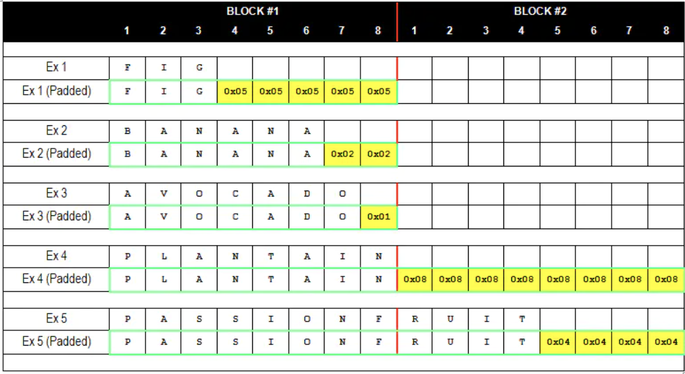
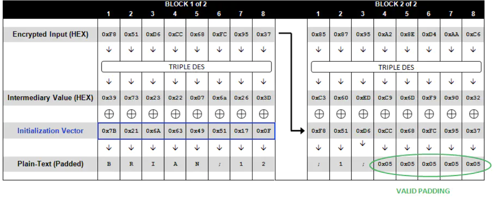
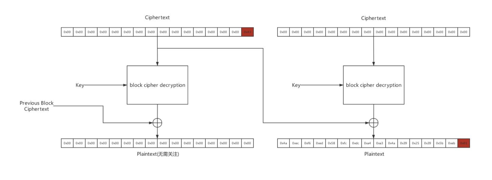
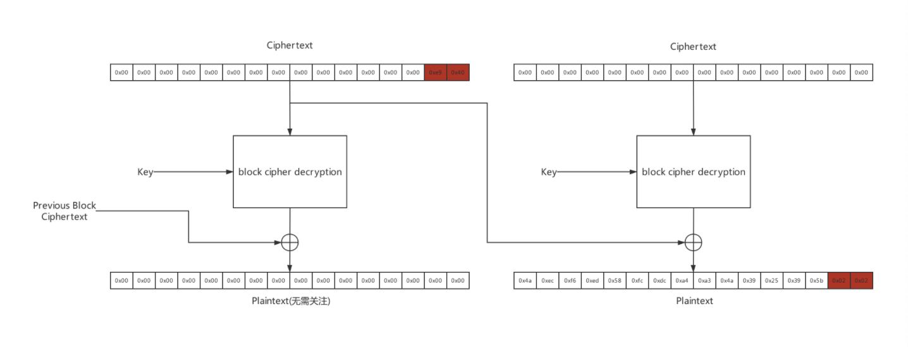
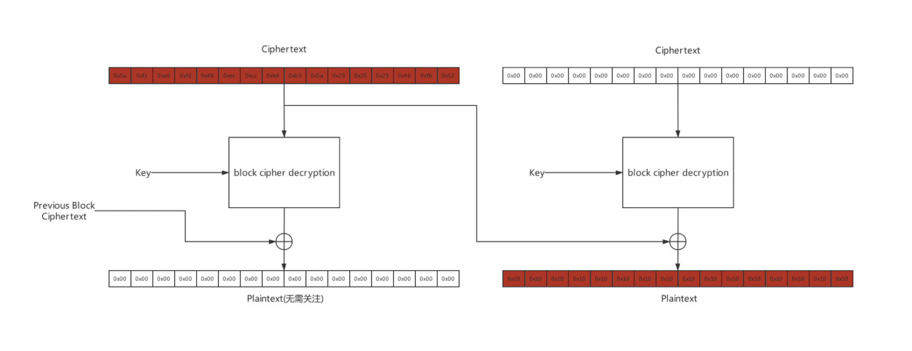

前面介绍了CBC翻转攻击，从中也了解到了解密过程。而与解密过程中相关的还有一个Padding Oracle攻击。Padding Oracle攻击是2010年在欧洲举行的黑帽大会上由Juliano Rizzo和Thai Duong提出的。
Padding Oracle获取明文
前提条件
- 知道密文和IV
- 攻击者能够触发密文的解密过程，且能够知道密文的解密结果。(应用程序对解密正确与否会给出不同的响应)
利用点-加密过程中的明文填充
AES具有分组加密的特性。对于明文分块后不足分块大小的。就要进行明文填充。其中有种填充方式为PKCS5Padding。此种填充方式会在明文块末尾补足相应数量的字节，且每个字节的值等于缺少的字符数量。如下图所示:

攻击原理
如图所示的解密过程:

当攻击者拿到了IV和密文后。可以从图中得知，Intermediary Value即中间值是由明文和IV异或得到的，同时它也就是密文通过密钥解密得到的值。由上面的解密过程中可以得知P[1] = decrept(C[1]) XOR IV。那么得到了中间值，就可以知道明文了。如何获得中间值呢？
从CBC翻转攻击可以知道，IV是可以构造的。通过构造IV，使得解密后的明文最后一个填充字符为0x01，再将构造的IV与001进行异或，就得到了中间值的最后一个字节。我们知道，通过构造不同的IV，可以得到不同的明文，但是其中的中间值是不变的。因此，这个过程可以变成:
- 设置构造IV的值为0x00 0x00 0x00 0x00 0x00 0x00 0x00 0x00，将它直接进行解出明文可能出现错误的填充值。然后不断调整最后一个字节，使得其解出的明文最后一个字节的0x01。
- 这时候构造IV的最后一个字节的值 XOR 0x01就得到了中间值的最后一个字节值。此时将其异或上原始IV的最后一个字节，就获得了明文的最后一个字节。
- 然后进行明文倒数第二个字节的获得。首先构造的IV需使得明文的最后两个字节为0x02,0x02。倒数第一个字节的IV，此时可以通过中间值最后一个字节 XOR 0x02获得。倒数第二个字节的IV需要像1中那样爆破。
- 重复以上步骤，直至获取到最后一个明文字节。
Padding Oracle构造密文
除了获取明文外，它还可以获得任意明文的加密密文。直观来看，在上一步中已经获取到所有的中间值。首先将明文进行填充，然后与中间值异或就可以得到IV值。然后将第二个分组的明文异或第二个分组的中间值，即得到了第一个分组的密文。那么到这里就会发现最后一个分组的密文无从得知。
有人提出了获得任何明文的密文的方法。从最后两个密文块开始，随机生成最后的密文块。然后每次根据最后一个明文，获取到前一个密文块的密文。依次类推，最后获得密文，过程如图所示:



图片来自p0’s的博客
文字版的过程：
- 产生一个随机分组块Cr。
- 对于每一个明文块，从最后一个明文块开始
- 创建两个块大小的密文C’，它由空块(0000…00)以及最新生成的密文块Cn-1组成。首轮由空块和Cr组成。
- 改变空块的最后一个字节，直到不出现padding error。(此时空块的最后一个字节与后一个块的中间值异或的值为0x01)。还是依照上面的方法获取到后一个块的中间值。
- 获取到后一个块的中间值以后，就可以利用中间值和明文，构造出前一个块的密文。(P[n] = decrept(C[n]) XOR C[n-1] => C[n-1] = decrept(C[n]) XOR P[n])。
- 然后重复整个过程，直到最后第一个明文块的密文获取完毕。
- 再将所有的密文+Cr连接起来就获取到最终的密文了。
整个Padding Oracle的加密过程，就像是先获取到明文，然后使用CBC翻转攻击，使其成为特定的明文，从而构造任意明文的密文。